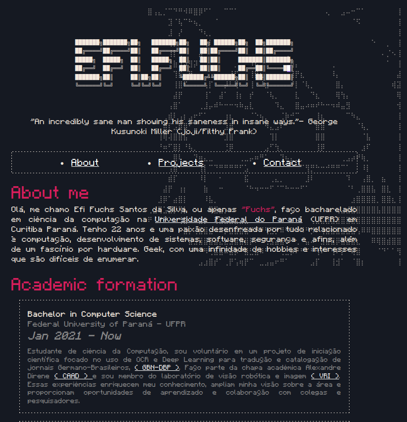
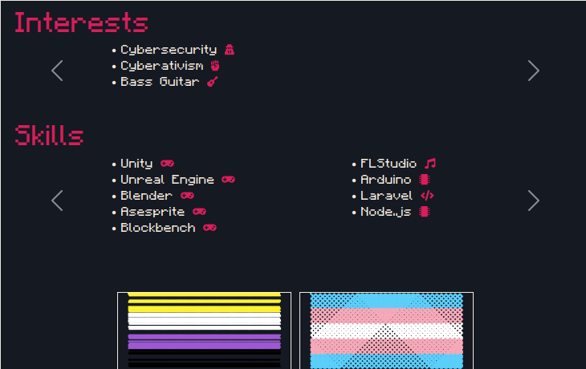

O site da Efi foi o primeiro site pessoal do dinf que eu acessei, ela é a mãe do Cassioh, o bot do Whatsapp, ela cuida do server de mine e quando eu entrei como caloura ela era pra mim a pessoa mais legal que já pisou nesse campus.
O site tem um estilo ASCII e vc consegue ver o Neco-Arc (vulgo gato filho da p*ta) lá no fundo.

Também tem vários elementos de JS, listinha corrente de habilidades, frases que mudam a cada acesso e bandeirinhas que se pintam (eu que sugeri esse último :)).
Um site incrível.